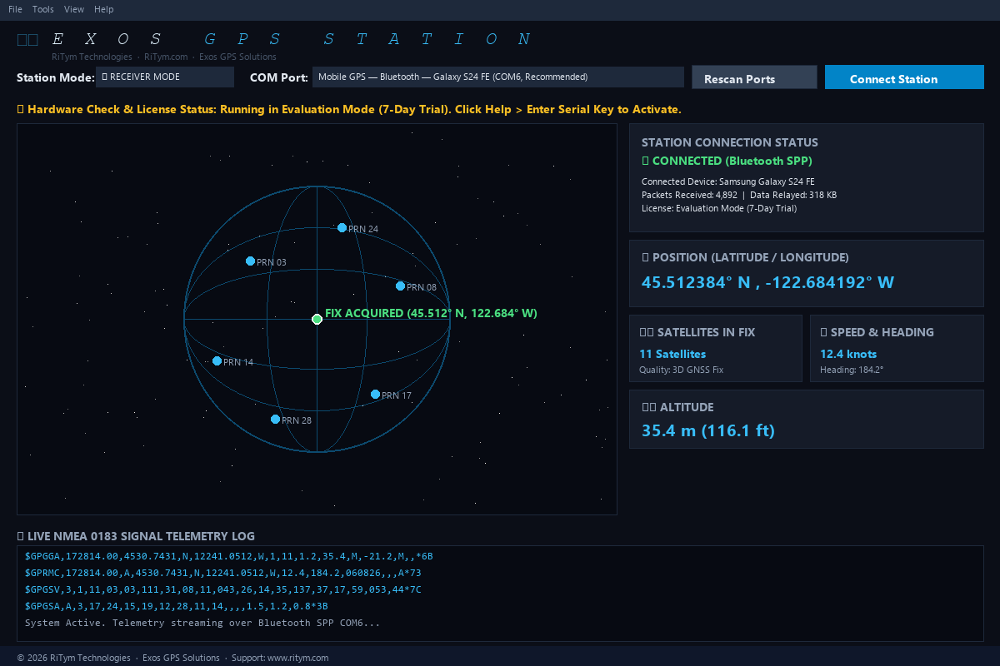
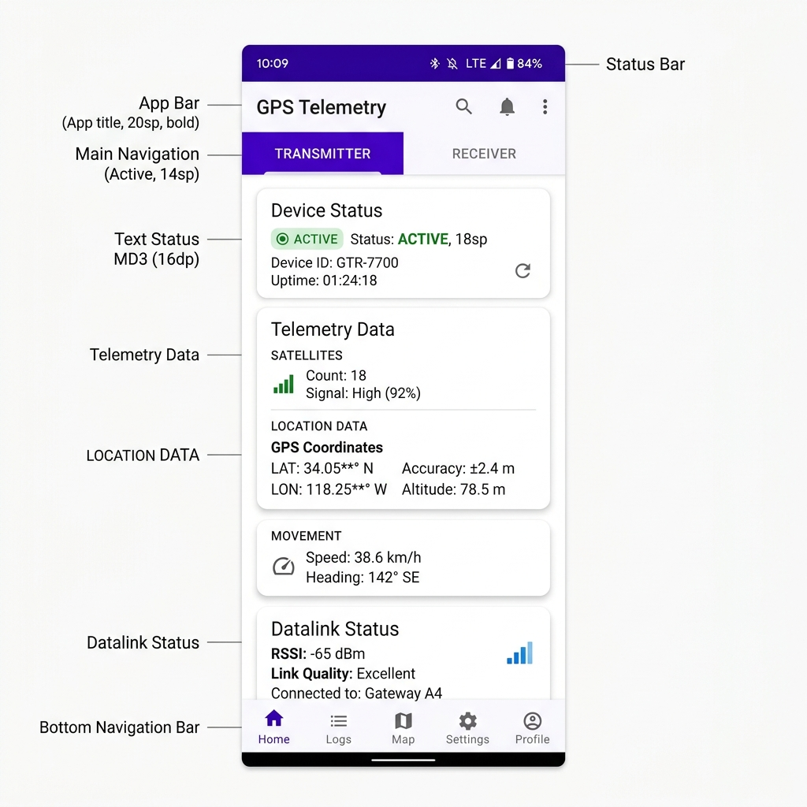

EXOS GPS is a cross-platform telemetry bridge that reads standard NMEA 0183 sentences from any GPS/GNSS receiver and streams them in real-time over Bluetooth SPP, Bluetooth LE, Wi-Fi TCP, or USB Serial — connecting Android phones, Windows desktops, and dedicated GNSS hardware into a unified location pipeline.

EXOS GPS Station — Windows Desktop Telemetry Command CenterFrom field surveyors to app developers, EXOS GPS replaces fragile ad-hoc setups with a robust, tested pipeline.
Stream phone GPS to a central Windows station over Bluetooth. Monitor multiple vehicles from one dashboard with sub-second position updates.
Bridge external GNSS hardware to marine charting software via TCP/UDP sockets. Standard NMEA 0183 compatible with OpenCPN, Navionics, and custom AIS systems.
Connect u-blox, SiRF, or Garmin USB receivers to field tablets. Record GPX tracks, monitor HDOP/VDOP precision metrics, and export to GIS tools.
Inject mock GPS coordinates into Android system location services. Test location-aware apps (Google Maps, Waze, Uber) without physically moving.
Pair ESP32 EXOS hardware modules with the EXOS receiver. Authenticated BLE transport with identity hash verification prevents spoofing.
Share your phone's GPS with a tablet that has no GPS chip. The receiver device uses mock location injection so all apps see the relayed position.
A real-time telemetry pipeline from GPS source to destination application.
The same professional-grade telemetry engine runs natively on Windows and Android.

EXOS GPS bridges virtually any GPS source to any destination using the protocol that fits your setup.
Serial Port Profile over Bluetooth Classic. The primary transport for phone-to-PC GPS streaming. Auto-pairs and assigns COM ports on Windows.
UUID: 00001101-...-00805F9B34FBEncrypted GATT characteristics for low-power EXOS hardware modules. Identity hash verification prevents rogue device spoofing.
AES-encrypted transportLAN-based TCP socket connections with automatic DNS-SD service discovery. Ideal for high-throughput fixed installations and marine environments.
mDNS / ZeroconfDirect serial connection to USB GPS receivers. Auto-detects u-blox, Prolific PL2303, and FTDI chipsets with configurable baud rates (4800–115200).
NMEA 0183 @ 9600 baud defaultFeeds GPS coordinates directly into the Windows Location Sensor framework, enabling native location services for Edge, UWP apps, and system APIs.
ExosWindowsSensor.exeInjects received GPS positions as the system's mock location provider. Google Maps, Waze, and all installed apps see the relayed position as their own.
Developer Options → EXOS GPSEvery EXOS GPS installation works as both a Transmitter (reads GPS and broadcasts) and a Receiver (accepts remote GPS data). Switch modes with one tap/click.
No manual COM port numbers or IP addresses. EXOS discovers GPS devices automatically and shows them in plain language: "Mobile GPS — Bluetooth — Galaxy S24 FE (COM6)".
BLE connections use a cryptographic identity hash derived from the device's protected canonical ID. NMEA data is rejected if the hash doesn't match the selected advertisement.
Bluetooth COM connections run in an isolated helper process. A driver timeout is cancelled after 15 seconds without freezing the main app or blocking the next connection attempt.
Internet is only needed for initial licence validation. All GPS parsing, bridging, mock location, and recording works completely offline — critical for field and marine environments.
Share your Samsung Galaxy S24 FE's GPS with a Lenovo Tab that has no GPS chip. The tablet receives the position and feeds it to Google Maps as if it were its own GPS.
We are actively developing advanced marine and industrial features.